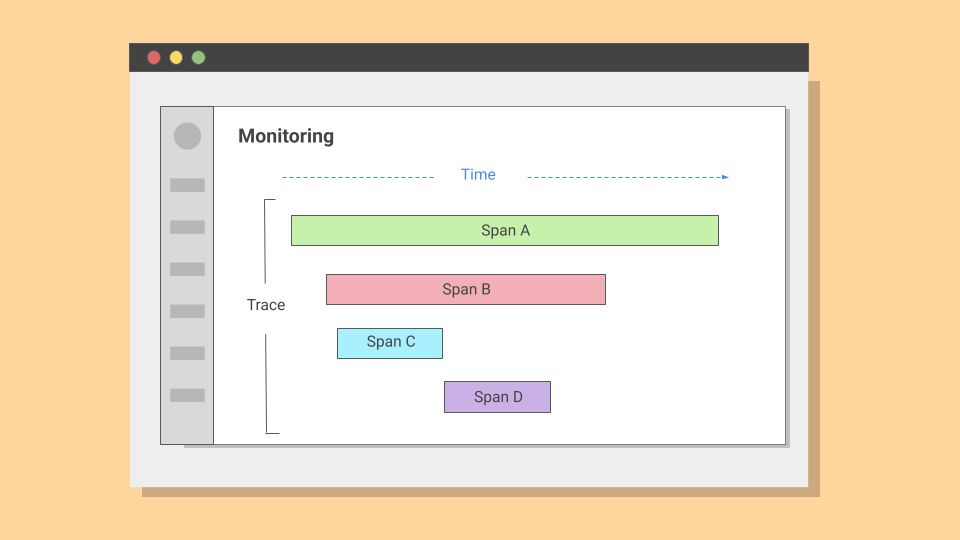
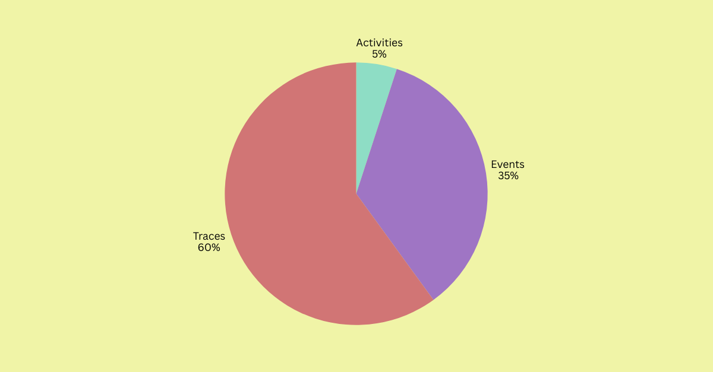

Finding the Right Words for Monitoring

In enterprise software, the wrong words can create internal friction and drive up support tickets. This project set out to standardize the terminology in a new Monitoring feature. What looked like a mere naming decision revealed itself to be an alignment between developers, admins, and product owners.
The Challenge
The Monitoring feature was designed to display logs and system traces. Some of these terms had roots in industry standards, others were unique to our product. None, however, worked consistently across our users.
Developers leaned toward precision, while Product owners cared more about accessible language. Admins, on the other hand, wanted both.
In our product, the concept of a trace was labeled as "Activity". Additionally, what is commonly known as spans appeared in the UI as "Activity details". Industry-wise, however, these words have more precise meanings.
For instance, a trace is the complete record of how an application executes logic across services, while a span is a single sub-operation within that trace, defined by its start and end time, duration, and metadata.
The mismatch between our nomenclature and industry-wide terminology created ambiguity for technical and non-technical users, making it clear that both needed to be reconsidered.
Even internally, teams didn't fully agree on what each term meant. This inconsistency made its way into the UI and documentation, creating friction and confusion.
I needed to find terminology that was natural, widely understood, and still accurate enough to preserve credibility with technical users.
The Approach
As the only UX Writer assigned to this project, I developed and ran two rounds of testing with a total of 40 participants of varied technical roles. Each session followed the same pattern: first, participants answered a free-input prompt to capture their natural vocabulary. Then, they saw a randomized multiple-choice set of four options, including their own input when possible. Finally, they explained their reasoning in a free-input field.
Methodology
To control for context bias, I split the work into two rounds: one with text-only prompts and one with UI mockups. This way, I could see whether a term felt natural in isolation but confusing in the interface, or vice versa. Because the sample size was relatively small, I added rigor in two ways.
First, I used one-sample exact binomial tests to check whether the leading term was chosen more often than chance would predict. For example, with four possible terms, the baseline probability of any one term being picked at random was 25%; with three options, it was 33%; with two options, it was 50%.
Second, for head-to-head contrasts, I ran pairwise Fisher's exact tests, which handle small sample sizes more reliably than chi-square.
I also introduced a weighted scoring system: terms recognized as industry standards received a multiplier of +1.25, while terms understood across both technical and non-technical roles received a smaller multiplier of +1.15.
Terms that caused hesitation or confusion were penalized with a –0.85 factor. This blend ensured that the final choices weren't driven by raw percentages alone, but by a balance of clarity and accuracy.
Findings
The first question was whether "Monitoring" worked as the umbrella term. Other options included Debugging, Analytics, and Insights. Out of 40 participants, 24 chose "Monitoring" (60%), followed by 8 for "Debugging" (20%), 6 for "Analytics" (15%), and 2 for "Insights" (5%).

A binomial test showed that "Monitoring" was significantly higher than the 25% baseline expected under chance (p < 0.001; 95% CI for the difference vs. baseline +26 to +52 percentage points). With its industry-standard multiplier, "Monitoring" clearly outperformed all alternatives.
Decision: Keep "Monitoring" as the umbrella term. Reserve "Debugging" for troubleshooting contexts
Logs
The next test was simpler. Participants were asked what they would call a system-generated record of events. Thirty-six out of forty chose "Logs" (90%), with only four choosing anything else.
A binomial test confirmed that this preference was far stronger than the 50% baseline expected under chance (p < 0.001; 95% CI for the difference vs. baseline +30 to +62 percentage points). Free-input responses also overwhelmingly used "Logs".
Decision: Keep "Logs" unchanged.
Activities, Events, Traces
The more difficult naming challenge emerged when we looked at how the product described a record of system behavior through time. In observability, the industry-standard term is a trace: a record that captures the sequence of events as an application executes logic, showing how different services interact.
Our UI, however, labeled this concept "Activities". On paper, the word sounded approachable. In practice, it was vague. Some participants assumed it meant audit logs of end-user actions, others were unsure whether it referred to system-level events.
In text-only prompts, many leaned toward “Events,” finding it intuitive and less technical than either Activities or Traces. But once shown UI mockups, comprehension shifted. With context, “Traces” gained ground. By the end of the second round, 24 of 40 participants (60%) favored “Traces”, compared with 2 for “Activities” (5%) and 14 (35%) for “Events”.
A binomial test against a 33% baseline confirmed that this majority was highly unlikely under chance (p < 0.001; 95% CI for the difference vs. baseline +14 to +40 percentage points).
"Events" remained useful in specific contexts. Product owners found it approachable, and admins saw it as a good fit for user-facing occurrences. But under the scoring model, "Traces" carried the industry-standard multiplier, which pushed it above "Events" in the final evaluation.
Decision: Retire "Activities". Keep "Traces" as the canonical industry term, supported by UI context and documentation. Use "Events" only for user-facing occurrences, not system-level tracing.
Spans
The final terminology challenge centered on "span", the unit inside a trace. A span is a sub-operation with its duration and metadata. Multiple spans, linked together, form a trace that shows how a request flows across services.
But the term span proved nearly unusable at first. Few participants recognized it. Non-technical users confused it with HTML tags, and only a handful of developers understood it correctly.
When participants were asked what they would call this unit, 28 out of 40 chose Operation (70%), 8 chose Job (20%), and only 4 chose Span (10%).
A binomial test confirmed that Operation's share was significantly higher than the 33% baseline expected under chance (p < 0.001; 95% CI for the difference vs. baseline +23 to +57 percentage points). Fisher's exact test of "Operation" vs. "Span" (28 vs. 4) gave p < 0.001, with a 95% CI for the difference of +39 to +77 percentage points.
Under the scoring model, "Span" was penalized heavily for lack of comprehension, while Operation gained both industry credibility and cross-role clarity.
To preserve accuracy without alienating users, I recommended renaming it to "Sub-operation (span)" in the UI, paired with a tooltip explanation to educate gradually.

Decision: Replace "Span" with "Sub-operation (span)", supported by tooltips.
Outcome
By the end of the research, the terminology set for the monitoring feature was standardized:
- Monitoring as the umbrella label.
- Logs remain unchanged.
- Activities retired in favor of traces, with events reserved for user-facing contexts.
- Span reframed as sub-operation (span) with tooltip support.
This consistency carried through the UI, documentation, and support, reducing ambiguity and improving usability. Developers, admins, and product owners now had a shared language.
Results
In follow-up interviews, participants described the revised terms as more natural and easier to navigate. I touched base with support management three months after the changes went live. They reported up to 27% drop in tickets related to Monitoring.
More importantly, the methodology set a precedent. By combining free input with multiple choice, text-only prompts with UI context, and validating results through exact binomial tests, pairwise Fisher's comparisons, and weighted scoring, the team gained a repeatable model for terminology research.
This outcome proved that words are not surface-level. They are fundamental to how everyone understands and interacts with a system.